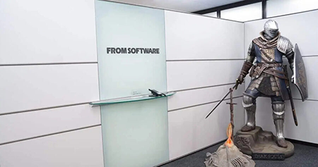

About
FromSoftware is a renowned video game developer based in Japan, known for its challenging and immersive action RPGs. Founded in 1986, the company began by developing games for the original PlayStation and has since become a household name among gamers. FromSoftware has a reputation for creating games that are not only difficult but also deeply rewarding to players who persevere.
One of the hallmarks of FromSoftware's games is their intricate level design. The company's games often feature sprawling environments filled with hidden paths and secrets, encouraging players to explore and discover new areas. FromSoftware's level design also tends to be highly interconnected, with shortcuts and secret passages that allow players to navigate the world more efficiently.
Another defining feature of FromSoftware's games is their challenging difficulty. Players must carefully manage their resources and learn from their mistakes in order to progress through the game. The combat system is typically based on stamina management, with players having to carefully time their attacks and dodges to avoid taking damage. The difficulty of FromSoftware's games has made them a favorite among hardcore gamers, who relish the challenge and the sense of accomplishment that comes with overcoming it.
Despite their difficulty, FromSoftware's games are also known for their deep and intricate lore. The company's games often feature complex storylines and a wealth of world-building details, giving players a rich and immersive experience. FromSoftware's games are also notable for their minimalist storytelling approach, with much of the story and world-building conveyed through environmental storytelling and item descriptions.